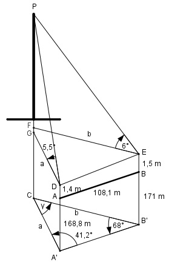

Aufgabe 199 Um die Höhe h eines Turmes über NN zu bestimmen wurde eine geeignete horizontale Standlinie AB mit einer Länge von 108,1 m festgelegt. Punkt A befindet sich auf einer Höhe von 168,8m, B auf 171 m. Die Instrumentenhöhen sind in A 1,4 m, in B 1,5 m. Der Horizontalwinkel α in A ist 41,2°, β in B ist 68°. Von A aus wird dieTurmspitze mit einem Höhenwinkel γ = 5,5°, von B aus mit δ = 6° angepeilt. Wie groß ist h?

γ = 180° - 41,2° - 68° = 70,8° Im Dreieck A’B’C: Fall SWW: Sinussatz: A’B’ a ------- = --------- |*sin 68° sin γ sin 68° A’B’ * sin 68° 108,1 m * sin 68° a = ----------------- = ------------------- = sin γ sin 70,8° 108,1 m * 0,9272 = ------------------ = 106,1 m 0,9444 Im Dreieck GDP: GP tan 5,5° = ---- |*a a GP = tan 5,5° * a = 0,0963 * 106,1 m = 10,2 m CP = 168,8 m + 1,4 m + 10,2 m = = 180,4 m über NN = h Die Aufgabe ist überbestimmt. Die Höhe ließe sich auf ähnliche Weise auch mit der Seite b bestimmen, um dann einen Mittelwert zu bilden.